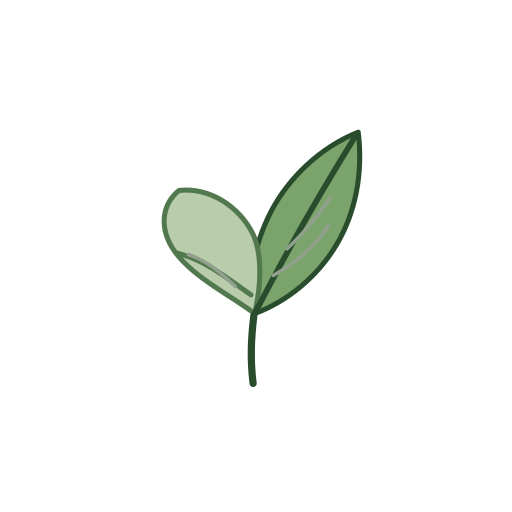

LeviLamina
Original SVG ↗Official vector mark used as the primary botanical and colour reference.
WHITE
OLED BLACK

LEVI ICON STUDYUNOFFICIAL DESIGN REVIEW / V1 + V2
V1 covers website feature icons. V2 explores separate identities for LeviMC projects. Both use this same gallery, search, theme control and preview system.
V1 / WEBSITE ICONS
The original V1 SVG artwork and colours are retained. Each placement shows its recommended option and two alternatives.
No matching V1 placements.
V2 / PROJECT IDENTITIES
Select a logo direction, then switch between the SVG icon, banner, favicon, Apple touch icon and Open Graph export.
No matching project identities.
REFERENCE / EXISTING BRAND
These are the existing official reference assets, linked directly to their source repositories. They are not recreated proposal artwork.
Official vector mark used as the primary botanical and colour reference.
Official launcher leaf asset, shown without recolouring or restyling.
Official marks are kept unchanged. Project concepts reuse the LeviLamina leaf as a secondary family detail, but each project keeps its own palette and symbol.